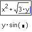
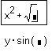
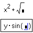
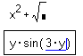

Moving Parts of an Expression |
To move part of an expression either to an empty placeholder or to a blank space in your worksheet:
Place your selection between the math editing lines.

Choose Cut or Copy from the Edit menu.

Click where you want to paste the selected expression.

Choose Paste from the Edit menu.
